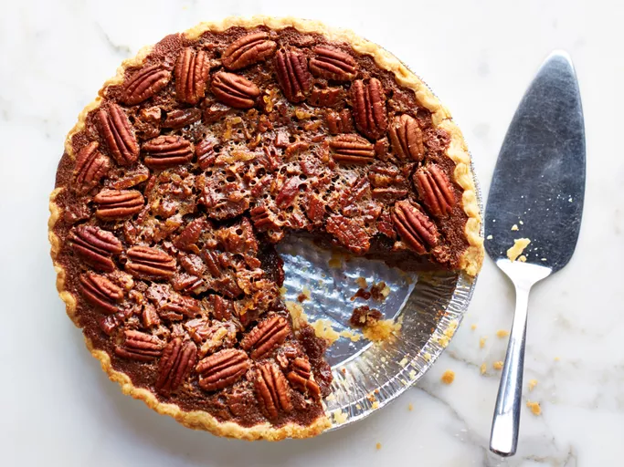

Pecan Pie

Description
This pecan pie recipe makes a wonderfully rich, Southern-style pecan pie.
It's the best I've ever tasted!
Ingredients
- 1-3/4 cups white sugar
- 1/4 cup dark corn syrup
- 1/4 cup butter
- 1 tablespoon cold water
- 2 teaspoons cornstarch
- 3 large eggs
- 1/4 teaspoon salt
- 1 teaspoon vanilla extract
- 1-1/4 cups chopped pecans
- 1 (9 inch) unbaked pie shell
Steps
-
Gather the ingredients. Preheat the oven to 350 degrees F (175 degrees
C).
-
Combine sugar, corn syrup, butter, water, and cornstarch in a saucepan
over medium heat. Bring to a full boil; remove from heat.
-
Beat eggs in a large bowl with an electric mixer until frothy. Gradually
beat in cooked syrup mixture. Stir in salt, vanilla, and pecans.
-
Pour pecan mixture into pie shell. Bake in the preheated oven until
filling is set, 45 to 50 minutes.
- Allow to cool to room temperature. Serve and enjoy!
Home